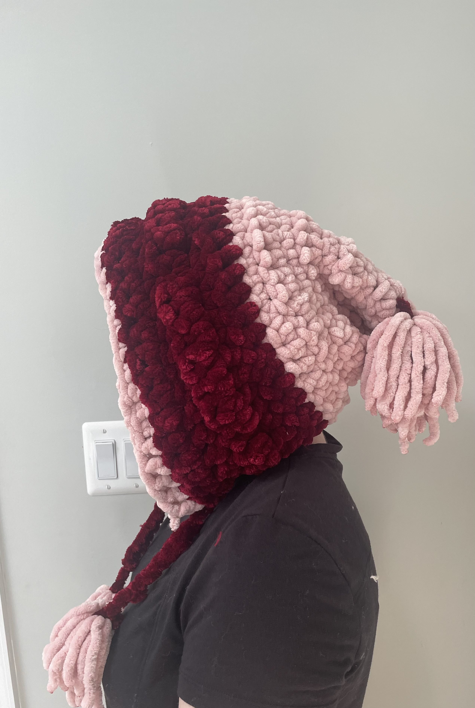
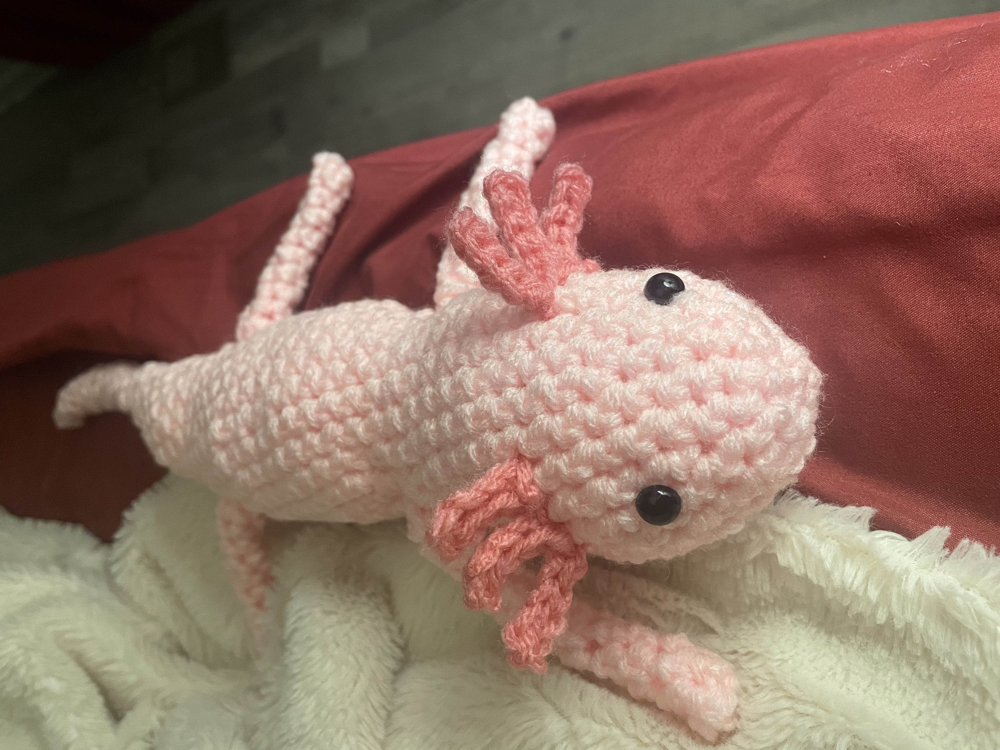
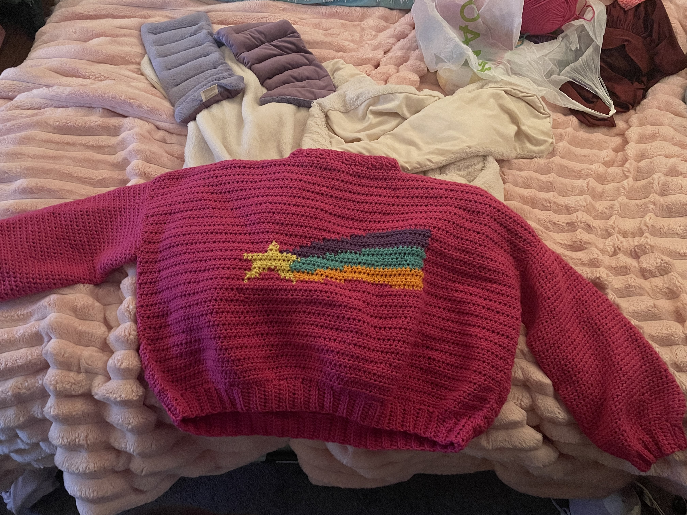

Introduction
Crocheting is just one of many crafting hobbies, but it's got to be my favorite. While I love embroidery and cross stitching, crocheting allows you to create clothing and items instead of just decorating them. I learned to crochet as a kid when I was stuck at home recovering from a concussion, trying to find an activity that wasn't physically active, but avoided screens (like TV).
About Crocheting
Crocheting is often mixed up with knitting. While both can use yarn and some sort of tool, crocheting only uses one hooked took instead of two pointed "needles" like knitting. The amount of stitches and materials you can use allow for your creativity and imagination to run wild with the amount of things you can make- Small stuffed animals, blankets, hats, handbags, and more! And if you're not at the level that you can create the something yourself just from your knowledge of stitches, the amount of patterns that people have already published online is extensive as well.
Favorite Projects
Strawberry Blanket

My strawberry blanket: one of the biggest project I've ever done. It's pixelated look mimics a strawberry from my favorite video games, Stardew Valley. I worked forever on this- maybe an estimated 5 months of crocheting squares, then sewing them all together. I hadn't even realized how expensive thick, fuzzy yarn was until starting this project.... but it turned out amazing!
Winter Hat

With the leftover fuzzy yarn from my strawberry blanket, I decided to make a beautiful hat to keep me warm in the winter. I wore it a lot this last winter, and not only does it look nice, but it keeps my head and neck super warm! It even does a great job protecting me from the wind!
Axolotl

One of the most cute and interesting animals to me is the axolotl. While I would never own one myself, I found a pattern of one that I thought was adorable and I already had the yarn for it. How perfect! It didn't take long, and it was great practice for new techniques I hadn't used much before with crocheting.
Star Sweater

My younger sister is the biggest fan of the TV show Gravity Falls. When I found a pattern for the star sweater that my sister's favorite character wears in the show, I knew I had to make it for her. It took a few months to make and I managed to keep it a secret the whole time. She absolutely loved it and uses it now to cosplay as her favorite character, or just to stay warm on a winter day!